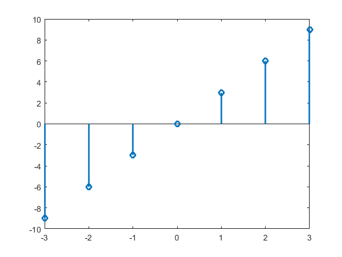
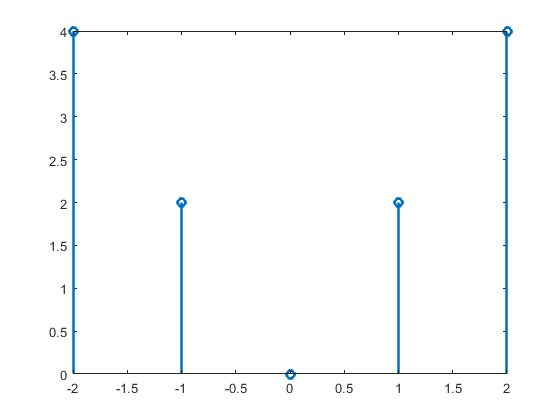
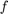
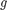
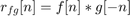

Contents
Grafica de la señal (c)
figure
f =@(n1) 3.*n1;
n1=-3:3;
stem(n1,f(n1),'LineWidth',2)
 Grafica de la señal (d)
figure
f2=@(n3) abs(2.*n3);
n3=-2:2;
stem(n3,f2(n3),'LineWidth',2)
 3.-Convolucion (c) con (d)
Problema 3.1.1 Lathi
n=-4:4; a=[0 -9 -6 -3 0 3 6 9 0]; b=[0 0 4 2 0 2 4 0 0]; convdisc([n;a],[n;b])
Error using getframe (line 48)
A valid figure or axes handle must be specified
Error in convdisc (line 56)
frame = getframe(hFig);
Error in practica4 (line 17)
convdisc([n;a],[n;b])
4.-Correlacion (c) con (d)
Problema 3.1.1 Lathi recordemos que la correlacion entre  y  es , entonces es posible invertir la señal en (d),para hacer la operacion correspondiente, como esta es par, no presenta ningun cambio, por lo que la correlación equivale al resultado de la convolución
n2=-4:4; f=[0 -9 -6 -3 0 3 6 9 0]; g=[0 0 4 2 0 2 4 0 0]; convdisc( [n2;f], [n2;g] )
5.-Convolucion de (c) con (d) usando el comando conv de MATLAB
figure
c=[0 -9 -6 -3 0 3 6 9 0];
d=[0 0 4 2 0 2 4 0 0];
w=conv(c,d);
n4=-8:8;
stem(n4,w,'LineWidth',2)